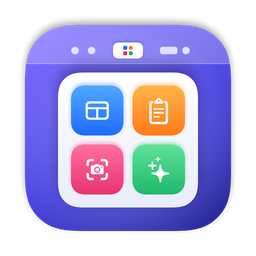

Orbit-Lite
Orbit 的轻量跨平台版，同时支持 Windows 与 macOS 的效率工具合集：启动器、剪贴板、窗口管理、截图与系统维护。
The lightweight cross-platform edition of Orbit for Windows and macOS: launcher, clipboard history, window management, screenshots and system maintenance.
启动器Launcher
应用（支持拼音）、计算器、网页搜索、文件、系统命令与脚本。
Apps, calculator, web search, files, system commands and scripts.
剪贴板Clipboard
文本、图片、文件、链接、颜色，搜索、收藏夹与直接粘贴。
Text, images, files, links and colors with search, collections and direct paste.
窗口管理Windows
半屏、四分之一、三分之一、最大化、跨显示器与边缘吸附。
Halves, quarters, thirds, maximize, multi-display and edge snapping.
截图Screenshots
区域、窗口、全屏截图，标注、贴图与文字识别。
Region, window and full-screen capture with annotation, pinning and OCR.
系统维护Maintenance
刷新 DNS、重建图标缓存等常用维护任务。
Flush DNS, rebuild icon caches and other routine tasks.